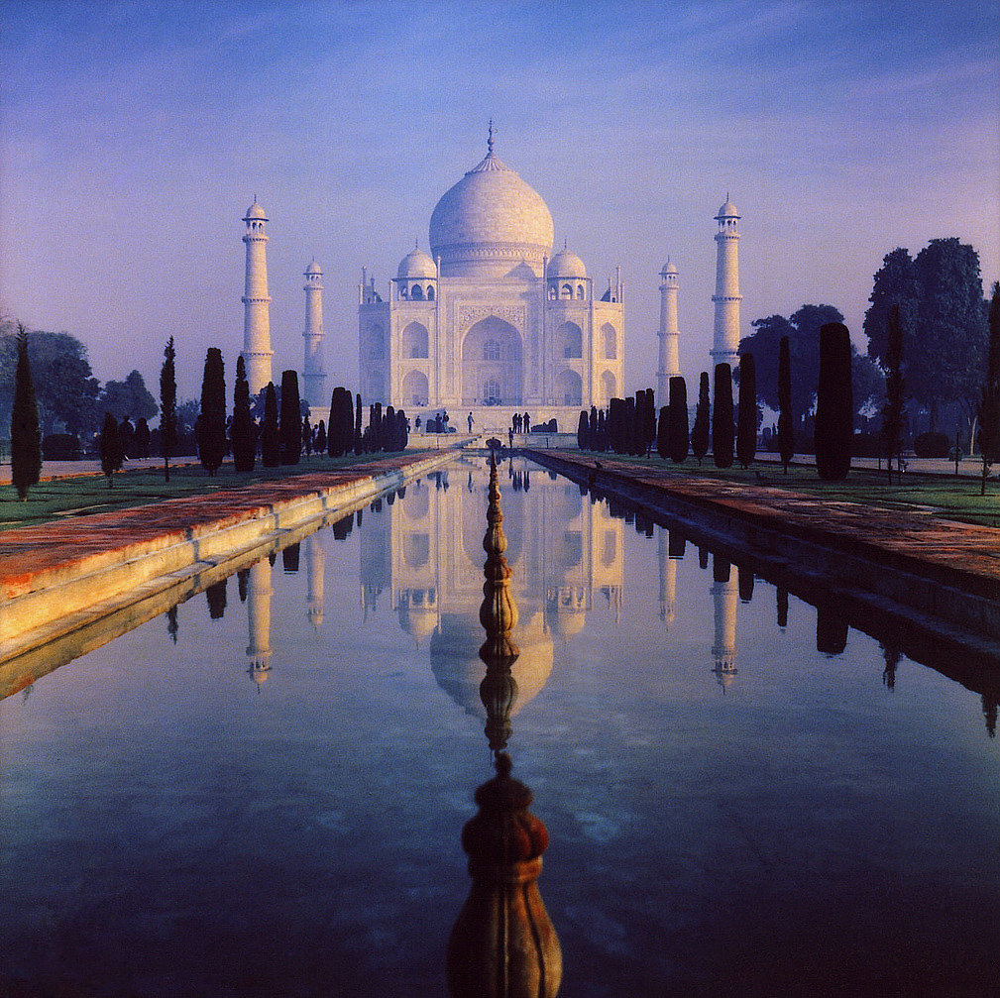

Таџ Махал је грађевина у Агри у Индији, изграђена између 1631. и 1654. године. Градило ју је 22.000 људи. Шах Џахан је наредио изградњу овог маузолеја за своју омиљену жену, Арџуманд Бано Бегум, која је познатија као Мумтаз Махал. Таџ Махал се сматра врхунским остварењем могулске архитектуре, стила који комбинује елементе персијских, индијских и исламских архитектонских стилова. Године 1983, Таџ Махал постао је УНЕСКО-в споменик Светске баштине описан као „драгуљ исламске уметности у Индији и један од универзално признатих ремек-дела светског наслеђа.“ Иако је бела купола мермерног маузолеја најпознатија архитектонска компонента, Таџ Махал је заправо интегрисани комплекс структура. Градња је почела око 1632. и завршена 1653. године, а укључивала је хиљаде уметника и радника. Ирански архитекта Устад Ахмад Лахаури сматра се главним пројектантом Таџ Махала. Састоји се од централне октагоналне грађевине, крунисане луковичастом куполом, чија је укупна висина око 75 м и која је скоро у потпуности изграђена од белог мермера; уз њу стоје два симетрична здања од црвеног пешчара - једно на северозападу а друго на југоистоку. На северозападу се налази џамија, а на југоистоку кућа за одмор. Димензије читавог комплекса правоугаоног тлоцрта оивиченог зидом износе 300 x 560 м. Испред поменута три здања налази се огроман врт, подељен на четири дела симетрично распоређеним каналима. Таџ је краљевски маузолеј за великог владара и његову омиљену жену. Цитати из курана су рапоређени на пажљиво одабрана места. Општи план и духовни карактер овог ремек-дела заснивају се на идејама које су развили суфијски мистици. Овај Сан у мермеру, како га називају историчари уметности, саграђен је на обали реке Џамуне за Арџуманд Бану Беган коју је шах Џахан одликовао почасним именом Мумтаз Махал, драги камен палате. Она је након рођења четрнаестог детета умрла 1631. године, а могул је наредио да се изнад њеног гроба сазида гробница какву свет није видео. Стручњак за конструкцију куполе је вероватно из Истанбула, зидари су долазили из Делхија и Кандахара, стручњаци за врх куполе су долазили из Лахора и Самарканда, калиграфи за калиграфију из Шираза и Багдада, резбари цвећа из Бухаре, вртне архитекте из Кашмира. Више од 20.000 радника је радило 17 година на изградњи овог споменика.
